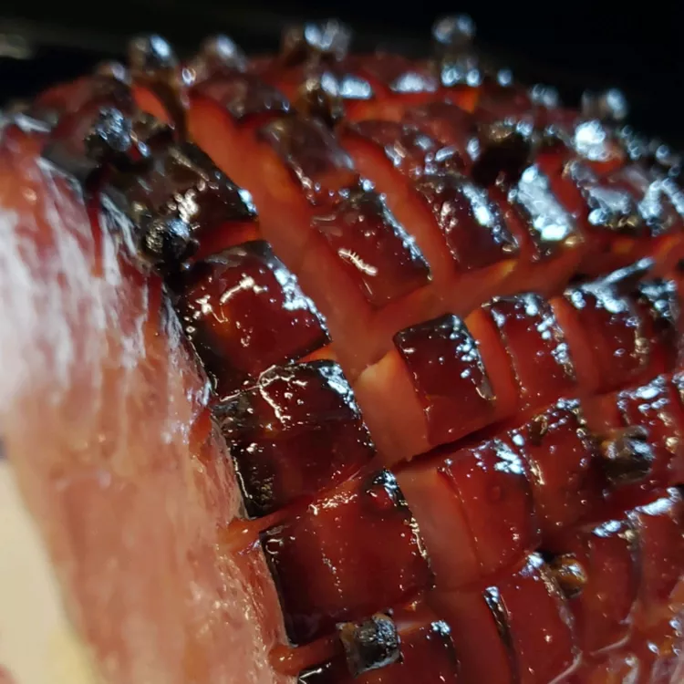

Honey Glazed Ham

Description
This ham will remind you of spending the holidays at Grandma's! It's very easy to make and tastes absolutley delicious.
The flavor profiles are broad and dance on your taste buds.
This dish will have everyone at the company potluck talking about how great of a cook you are!
Ingredients
- 1 (5 pound) ready-to-eat ham
- 1/4 cup whole cloves
- 1/4 cup dark corn syrup
- 2 cups honey
- 2/3 cup butter
Steps
- Preheat oven to 325 degrees F (165 degrees C).
- Score ham, and stud with the whole cloves. Place ham in foil lined pan.
- In the top half of a double boiler, heat the corn syrup, honey and butter.
Keep glaze warm while baking ham.
- Brush glaze over ham, and back for 1 hour and 15 minutes in the preheated oven.
Baste ham every 10 to 15 minutes the honey glaze. During the last 4 to 5 minutes
of baking, turn on broiler to caramelize the glaze. Remove from oven, and let sit
a few minutes before serving.